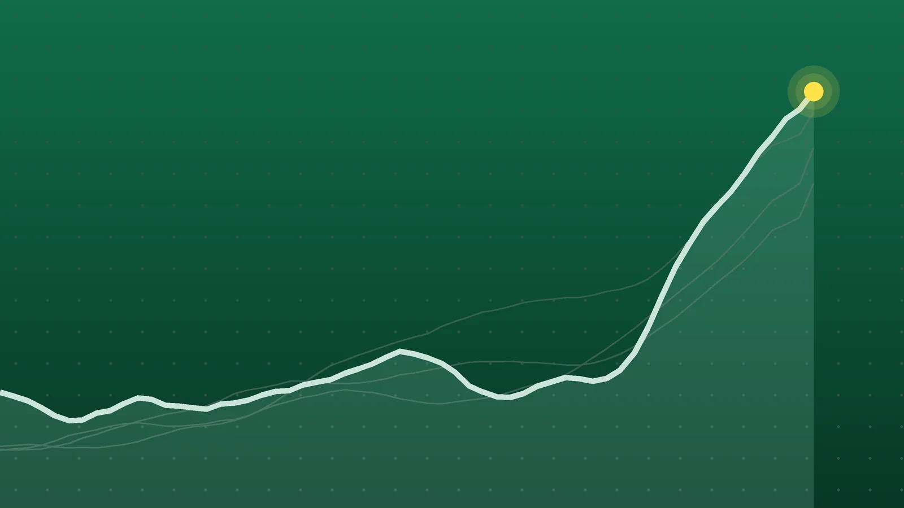

SportsExplainer
College Football Scores, Oct. 22: App State Hands JMU 1st Loss
Two of Thursday’s three FBS games went to overtime, and the one with the biggest stakes ended on a walk-off field goal in Boone.

Quick take
- James London’s 40-yard field goal in overtime gave Appalachian State a 34-31 win over James Madison, which had been 7-0.
- Memphis came back from 16-3 down at halftime to beat East Carolina 41-34 in overtime behind five total touchdowns from Marcus Stokes.
- Liberty beat Kennesaw State 34-6 for a sixth straight win and became bowl eligible for the sixth time in program history.
- No team in the AP Top 25 played on Thursday; James Madison was receiving votes.
Why it's trending Three FBS games were played on Thursday, Oct. 22, headlined by Appalachian State’s overtime upset of previously unbeaten James Madison.
College football scores for Oct. 22
James Madison came to Boone, North Carolina, at 7-0 and went home with its first loss of the season. Appalachian State kicker James London made all four of his field goals, the last a 40-yarder in overtime, and the Mountaineers won 34-31, AP reported.
In Thursday’s other two FBS games, Memphis needed overtime to finish a comeback against East Carolina, and Liberty rolled at Kennesaw State to clinch bowl eligibility.
All final scores
| Winner | Score | Loser | Note |
|---|---|---|---|
| Appalachian State | 34-31 (OT) | James Madison | London 4 of 4 on field goals, including the 40-yard winner |
| Memphis | 41-34 (OT) | East Carolina | Marcus Stokes threw for 320 yards and 3 TDs and ran for 2 more |
| Liberty | 34-6 | at Kennesaw State | Jaylon Coleman scored twice; Liberty outrushed KSU 215-62 |
The winners in the first two games were the home teams. The slate is from CBS Sports’ schedule, and no team in the AP Top 25 played Thursday.
App State 34, James Madison 31 (OT)
The fourth quarter alone produced 28 points. JMU went up 24-21 on a 47-yard field goal by Morgan Suarez. Then App State’s Colton Phares intercepted a pass and ran it back to the JMU 14 with 6:03 left, and two plays later backup quarterback Henry Hasselbeck, the son of former NFL quarterback Matt Hasselbeck according to Yahoo Sports, found Luke Douglas for a 4-yard score.
JMU answered with a 15-play, 71-yard drive that included a fourth-and-3 conversion, and quarterback Camden Coleman ran in from 6 yards out with 3 seconds left to tie it. In overtime, Suarez’s 47-yard attempt bounced off the left upright, which set up London’s winner. JMU outgained App State 423-366, according to the CBS Sports recap, but committed the game’s only turnover. Phares finished with 13 tackles, App State said.
Memphis 41, East Carolina 34 (OT)
East Carolina led 16-3 at halftime. Memphis scored 17 points in the third quarter, two of them touchdown passes by Stokes, and the teams traded scores until ECU’s Mitch Griffis hit Landon Sides for a 20-yard touchdown that made it 34-34. Stokes ran in from 5 yards in overtime, and Ellis Ellis Jr. sealed it with an interception, Memphis Athletics reported. Stokes completed 29 passes without an interception.
Liberty 34, Kennesaw State 6
Liberty scored on its first drive and never let Kennesaw State into the end zone. Deshawn Purdie threw a 56-yard touchdown to Coleman, who later ran one in from 9 yards, AP reported. It was the second time this season Liberty held an opponent without a touchdown, according to Liberty Athletics.
What it means
- JMU’s playoff path narrows: Yahoo Sports called the loss a significant blow to the Dukes’ hopes of a second straight College Football Playoff trip. It was their first regular-season loss since a 28-14 defeat at Louisville in Week 2 of 2025. They are 7-1, 4-1 in the Sun Belt, and were receiving 52 votes in the AP poll.
- App State back in the race: the Mountaineers improved to 5-2, 2-1 in the Sun Belt. JMU’s one conference loss now matches theirs.
- Memphis keeps pace: the Tigers are 6-2 and 3-1 in the American. East Carolina fell to 3-4 (1-2).
- Liberty’s streak: six straight wins after a 0-1 start leave the Flames at 6-1. Kennesaw State is 1-6 and has lost six in a row since winning its opener 47-0, AP noted.
What’s next
- Friday, Oct. 23 (ET): Duke at Virginia, 7 p.m. (ESPN); UMass at UConn, 7 p.m. (CBSSN); Army at Tulsa, 8:30 p.m. (ESPN2); Air Force at Wyoming, 9 p.m. (CW); NC State at Stanford, 10:30 p.m. (ESPN).
- Saturday, Oct. 24: No. 1 Miami hosts Pitt and No. 6 Indiana visits Michigan, both at noon ET. No. 2 BYU plays at UCF at 3:30 p.m. ET, according to CBS Sports.
- These teams: JMU hosts Troy next Thursday. App State plays at Georgia Southern on Oct. 31 at 6:30 p.m. ET, Memphis plays Army that night at 7 p.m. ET, and Liberty hosts FIU at 3:30 p.m. ET.
Sources
- CBS Sports College Football Schedule 2026-27Oct. 23, 2026
- NCAA.com College football rankings: Associated Press Top 25Oct. 18, 2026
- Associated Press via ESPN James London's 40-yard FG in OT helps Appalachian St. beat James Madison 34-31Oct. 22, 2026
- Associated Press via CBS Sports Appalachian State beats unbeaten James Madison 34-31 in OTOct. 22, 2026
- App State Athletics London's OT Kick Caps Dramatic App State Win Over JMUOct. 23, 2026
- Yahoo Sports Appalachian State hands James Madison its first loss of the season in 34-31 OT winOct. 23, 2026
- Memphis Athletics Tigers Overcome Second-Half Deficit in 41-34 Overtime Win over East CarolinaOct. 22, 2026
- Associated Press via CBS Sports Liberty routs Kennesaw State 34-6 behind Jaylon Coleman's two TDsOct. 22, 2026
- Liberty Athletics Flames Are Bowl Bound After Running Win Streak to 6 in a RowOct. 22, 2026
Keep reading
College Football Scores, Oct. 23: Army Edges Tulsa on Last Play
FBS college football scores for Friday, Oct. 23, 2026: Army beat Tulsa 38-35 on a final-play field goal, Duke won late at Virginia, and Stanford held on.
College Football Scores, Oct. 24: UCF Stuns No. 2 BYU in 2OT
FBS college football scores for Saturday, Oct. 24, 2026: UCF beat No. 2 BYU 39-31 in double overtime, Texas held off Ole Miss and Utah stayed unbeaten.

Cricket Scores, Oct. 22: Sri Lanka Chase 430 Despite Brook’s 202
Cricket results for Oct. 22, 2026: Sri Lanka chased 430 to beat England, South Africa routed Australia and India won a record T20I chase.